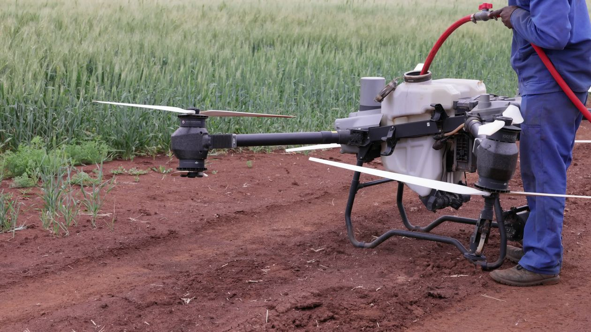

⌁
Обприскування посівів
Внесення дозволених засобів захисту рослин агродронами за погодженим технологічним завданням.
Обробка полів агродронами.
Нові можливості для вашого господарства.
Ваше поле.
Наш фокус.
Від першого огляду до погодженої обробки — плануємо роботу під вашу культуру, площу та умови поля.
Рішення для господарств, яким потрібна якісна обробка посівів без зайвого навантаження на техніку та ґрунт.
Внесення дозволених засобів захисту рослин агродронами за погодженим технологічним завданням.
Передзбиральна обробка культур із підбором режиму роботи відповідно до умов поля.
Внесення сумісних рідких добрив із контрольованою нормою та плануванням маршруту.

Усе починається з підготовки.Поєднуємо аграрний підхід із безпілотними технологіями. Кожне замовлення починається з оцінки потреб господарства.
Робота без заїзду важкого обприскувача на оброблювані ділянки.
Можливість працювати на окремих ділянках та зі складною конфігурацією поля за належних умов.
Узгоджуємо площу, культуру, препарат, технічні умови та доступність польотів.
Залишаєте заявку та орієнтовну площу.
Уточнюємо культуру, локацію та умови.
Погоджуємо вартість, дату й можливість виконання робіт.
Проводимо роботи згідно з погодженим завданням.
Вкажіть площу та узгоджений тариф за гектар. Розрахунок не враховує препарати, логістику й додаткові роботи. Остаточну пропозицію погоджуємо індивідуально.
Розкажіть про завдання — підготуємо персональну пропозицію після уточнення деталей.